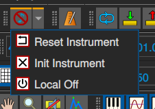

Barra de herramientas de pánico

Debido a la forma en que funciona MIDI, a veces es necesario reiniciar el estado de los dispositivos MIDI para desbloquearlos. Esta funcionalidad se recopila en la barra de herramientas de pánico (panic toolbar).
El botón de pánico
En raras ocasiones, es posible que algunas notas midi se atasquen, por lo que debemos acallarlas de inmediato.
El botón ‘pánico’ envía al controlador midi un evento llamado ‘todos los sonidos apagados’ y los comandos del modo ‘restablecer todos los controles’ (controladores 0x78 y 0x79) a todos los canales en todos los puertos midi de MusE.
El botón de pánico se encuentra disponible en las barras de herramientas Arranger y Midi Editor y en varias otras barras de herramientas de MusE.
El botón de apagado local (Local Off)
El botón de apagado local envía evento ‘apagado local del controlador midi’ (controlador 0x7a) a todos los canales en todos los puertos midi de MusE.
El botón para resetear Instrumentos
El botón ‘resetear instrumento’ envía el evento midi llamado “notas apagadas” (notes-off) a todos los canales en todos los puertos midi MusE.
El botón Inicializar instrumento
El botón ‘inicializar instrumento’ (init instrument) reenvía mensajes de inicialización (típicamente mensajes de modo sysex) según lo definido por el instrumento (consulte el cuadro de diálogo Editar instrumento).
Esto generalmente se hace automáticamente al cargar el proyecto, característica que puede desactivar en Configuración, de ahí la presencia del botón manual aquí.